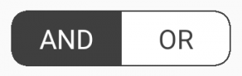

Create/Edit Screens, Bindable Layouts, and More
Since my last update I’ve been focused on building the Create Alert Definition screen in the Stock Alerts mobile app project. It’s been slow but steady progress, and I’m happy to report that both the Create Alert Definition and Edit Alert Definition screens are now functional. (Technically they’re both the same screen, but I’ve been treating them separately from a work management perspective.)
For those just tuning in, these past posts will bring you up to speed on the project, the features I’m building, the infrastructure, etc…
Create Alert Definition Screen
The MVP version of the Create Alert Definition screen is fairly simple – you search for and select a stock, enter one or more criteria for the alert, and click Save. I talked about the search functionality a couple of weeks ago, so the next task was to build the alert criteria.

The API supports complex, multi-level composite criteria, but for this version I’m building a UI that supports just one level of criteria combined with an AND or OR Boolean operator, as demonstrated in the GIF, to keep things simple.
SEGMENTEDBUTTONGROUP
To build the criteria section, I just needed a couple of toggle buttons to switch the composite operator between AND and OR, and a control to list 0..n criteria rules.
For the AND/OR selector, I chose to use the SegmentedButtonGroup control from the FreshEssentials library, which provides a look and feel similar to the iOS segmented control.

Integrating it into the view was fairly straightforward:
<freshEssentials:SegmentedButtonGroup OnColor="{StaticResource DarkGrayColor}" OffColor="{StaticResource WhiteColor}"
SelectedIndex="{Binding SelectedOperatorButtonIndex, Mode=TwoWay}"
HorizontalOptions="Center" HeightRequest="30" WidthRequest="120" CornerRadius="10">
<freshEssentials:SegmentedButtonGroup.SegmentedButtons>
<freshEssentials:SegmentedButton Title="AND"></freshEssentials:SegmentedButton>
<freshEssentials:SegmentedButton Title="OR"></freshEssentials:SegmentedButton>
</freshEssentials:SegmentedButtonGroup.SegmentedButtons>
</freshEssentials:SegmentedButtonGroup>
I bind the SelectedIndex to a SelectedOperatorButtonIndex property on the view model.
public int SelectedOperatorButtonIndex
{
get => (int)(_alertDefinition.RootCriteria?.Operator ?? CriteriaOperator.And);
set => _alertDefinition.RootCriteria.Operator = (CriteriaOperator)Enum.ToObject(typeof(CriteriaOperator), value);
}
I considered creating a converter to convert between the CriteriaOperator enum value and its corresponding value, but this does the job and is fine for now.
BINDABLE LAYOUTS
Working with the individual criteria would require a little more work.
To support the dynamic adding/removing of criteria, I knew I’d need a control like WPF’s ItemsControl, which binds to a collection of items on the data context and renders a view for each item. I would need something similar for Xamarin.Forms.
I was pleased to learn that Xamarin.Forms now has bindable layouts, which were introduced sometime since the last time I did any Xamarin.Forms work, which was a couple of years ago. Bindable layouts allow the user to bind a layout control ( any class that derives from Layout, like StackLayout, Grid, etc…) to a collection on the data context to control how the layout is populated, using data templates to define how the items are rendered.
The data binding of bindable layouts is familiar and consistent with other Xamarin.Forms data-bound controls. Let’s see how it works in the EditAlertDefinitionPage view. Here’s the StackLayout that contains the list of criteria:
<StackLayout BindableLayout.ItemsSource="{Binding CriteriaCollection}">
<BindableLayout.ItemTemplate>
<DataTemplate>
<alertDefinitions:CriteriaView BindingContext="{Binding}"></alertDefinitions:CriteriaView>
</DataTemplate>
</BindableLayout.ItemTemplate>
</StackLayout>
I only have one DataTemplate defined, but the ability to leverage a DataTemplateSelector to render different DataTemplates will likely come in handy in the future as I add more types of criteria.
CriteriaCollection is an ObservableCollection (observable, since the UI needs to update when the user adds or removes a new criteria) of CriteriaViewModels on the view model:
public ObservableCollection<CriteriaViewModel> CriteriaCollection { get; set; } = new ObservableCollection<CriteriaViewModel>();
CriteriaView is a custom view that simply has a single-row Grid to hold the individual controls for each criteria.
ADDING AND REMOVING CRITERIA
The adding and removing of the criteria is handled by methods on the view model:
public ICommand AddCriteriaCommand => new Command(ExecuteAddCriteria);
private void ExecuteAddCriteria()
{
AddCriteria(new CriteriaViewModel(new AlertCriteria(), NavigationService, Logger));
}
private void AddCriteria(CriteriaViewModel criteriaViewModel)
{
CriteriaCollection.Add(criteriaViewModel);
criteriaViewModel.RemoveCriteria += RemoveCriteria;
}
private void RemoveCriteria(object sender, EventArgs e)
{
var criteriaViewModel = sender as CriteriaViewModel;
CriteriaCollection.Remove(criteriaViewModel);
criteriaViewModel.RemoveCriteria -= RemoveCriteria;
}
Since the button to remove a criteria is on the individual criteria views, the ICommand for removal is located on the CriteriaViewModel, which raises an event to alert the parent EditAlertDefinitionPageViewModel to remove the specific criteria from its collection:
public EventHandler RemoveCriteria;
public ICommand RemoveCriteriaCommand => new Command(ExecuteRemoveCriteria);
private void ExecuteRemoveCriteria(object obj)
{
RemoveCriteria?.Invoke(this, null);
}
I won’t go into too much more detail regarding the specifics of managing the criteria. It’s mostly typical MVVM.
SAVING THE ALERT DEFINITION
I added simple validation to the view models that we’ve been looking at that fires when the SaveCommand is executed. If any validation on the alert definition or a child criteria fails, then I just display a red message at the bottom of the screen and prevent the save from occurring. It’s very basic, but good enough for now.
The act of saving the alert definition by executing a POST request to the Stock Alerts API is handled by the AlertDefinitionsService, which is a wrapper around an HttpClient for communicating with the alert-definition-related endpoints on the API.
Edit Alert Definition
Once I had the Create Alert Definition screen working and creating alert definitions, making the modifications to enable the editing and saving of existing alert definitions was fairly straightforward.
Here’s what it took:
- Make alert definitions on the
AlertsPageViewModelselectable, and bind theSelectedItemto propertySelectedAlertDefinitionon the view model, which navigates to theEditAlertDefinitionPagepassing the selectedAlertDefinitionas a navigation parameter (I’m using Prism’s navigation service). - Modify
EditAlertDefinitionPageViewModel.OnNavigatedTo(..)to check for aSelectedAlertDefinitionnavigation parameter, and if found, call privateInitializeForEdit()to set various properties appropriately for edit rather than create mode. - Make minor adjustments to
CriteriaViewModelappropriate for edit mode.

At some point I’ll fix the orange color of the selected item in the list view and the sizing bug of the “remove” icon on individual criteria, but not today. We’re functioning, and that’s good enough for now.
Other UI Stuff
I also spent some time this week tweaking the colors and layouts of some of the app’s screens, added a loading/busy indicator to several screens, and made a few other minor UI adjustments.
I’m trying to keep the UI simple and clean.
I’m not a designer, and I’m much stronger on API and backend development, but I do the best I can with the pixels.
Wrapping Up
Well that’s all I’ve got for this week! This coming week I’ll continue to work on the other screens in the app. It shouldn’t take too long to get the app to MVP state.
I’m also working on a post about how I build the criteria rules evaluation engine for Stock Alerts using the specification pattern, so keep an eye out for that in the next week or two.
Thanks for reading!
– Jon
I’m a developer and solo SaaS founder who likes to build things and share what I learn with others. If you’re interested software development, launching things, or random early morning thoughts, consider following me on Twitter or subscribe to my newsletter.
Thanks for reading!